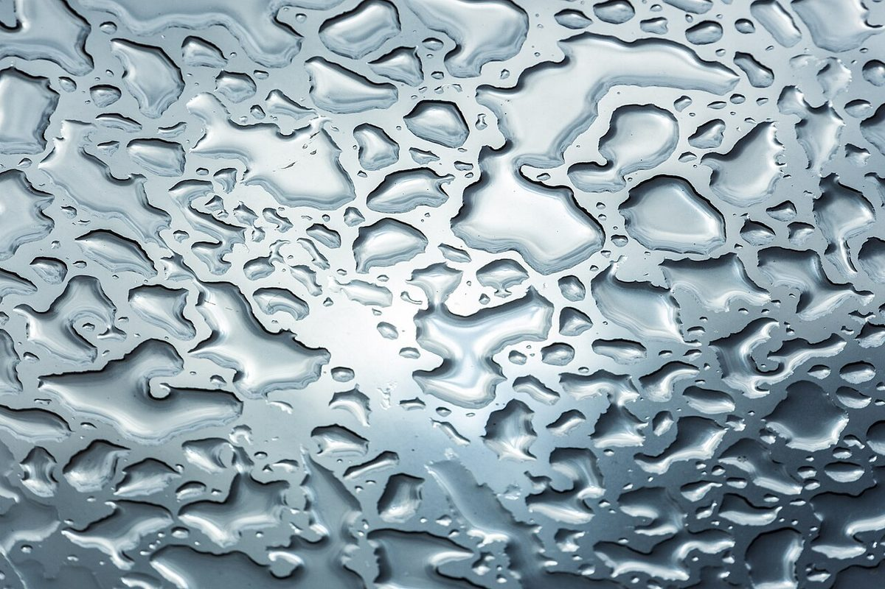
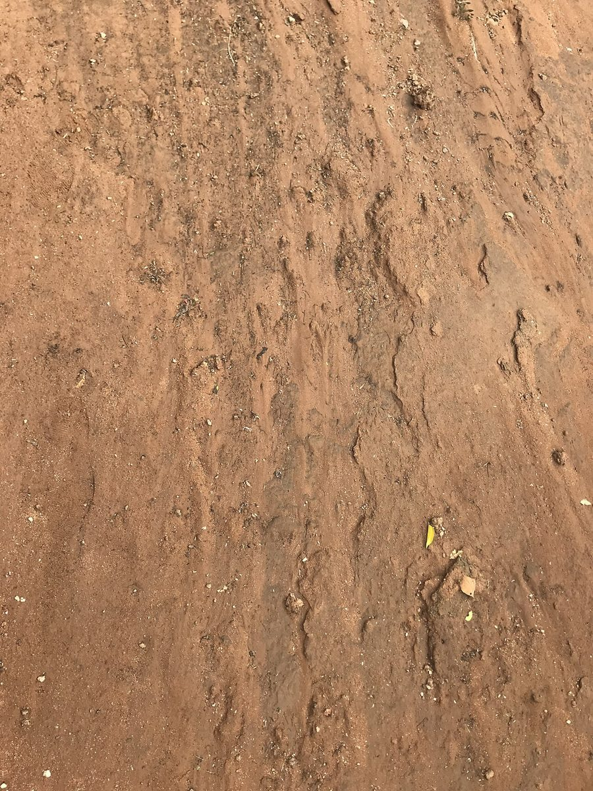
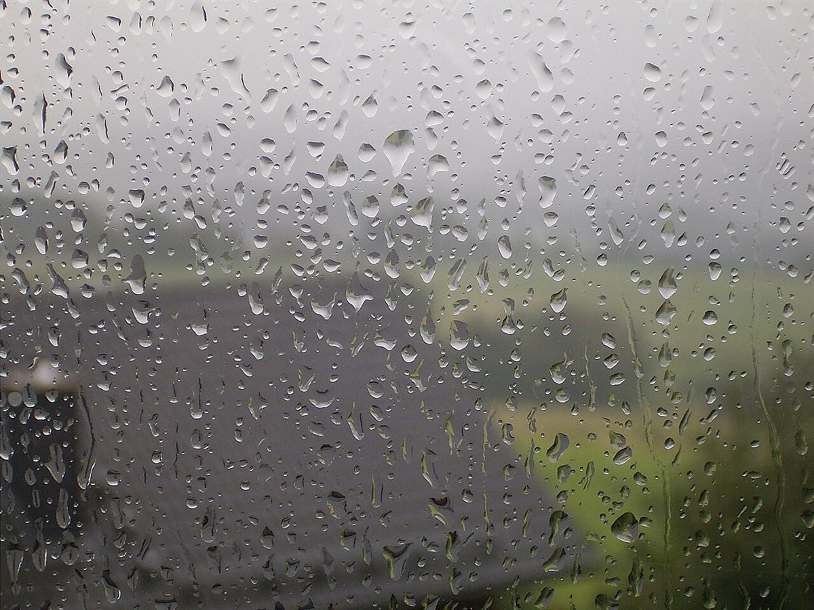

制作側の連想
「降りはじめの舗道」から考えたこと
店名の由来は分かりません。制作側は、PETRICHORという英単語が「乾いた地面に雨が降ったときのにおい」を指す言葉だと知られていることから、乾いた舗道に最初の一滴が落ちて、濡れ跡が増えていく様子を連想しました。そこでこのページは、背景の濡れ跡がページごとに少しずつ増えていく作りにしています。お店の理念や由来とは無関係の、制作側の連想です。
最初の一滴から本降りまで
濡れ跡が増えていく五段階
写真は下野市の風景ではありません。段階のイメージで選んだ、国外・撮影地不明のフリー素材です。
はじめの一滴まだ落ちていない乾いた地面
湿った土のイメージ。ここから数えはじめます。

国外のイメージ(ボツワナ) 二、三滴ぽつり
葉の先にたまる水滴。降りはじめの数粒を思わせる一枚。

国外のイメージ(オーストラリア) 十滴ほど点々
葉に点々と残る雨粒。数がすこしずつ増えていきます。

撮影地不明のイメージ 数十滴にじむ
ガラスに並ぶ雨粒。景色がぼんやりにじむ頃のイメージ。

撮影地不明のイメージ 数えきれない滴ひとつながり
粒が寄りあってつながる、本降りのイメージ。
撮影地不明のイメージ
ご案内
お店のこと(確認できたものだけ)
| 所在地 | 〒329-0501 栃木県下野市上古山８４−２ |
|---|---|
| 電話 | なし |
| 営業時間 | 準備中 |
| 定休日 | 準備中 |
| ご予約 | 準備中 |
| 駐車場 | 準備中 |
| SNS | Instagram @petrichornote |